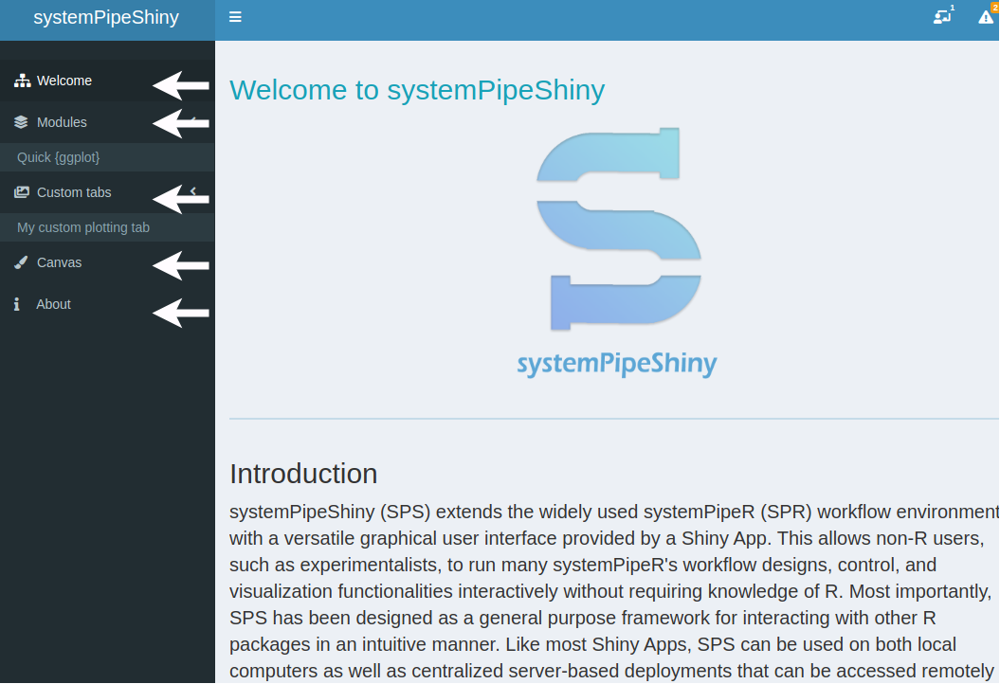
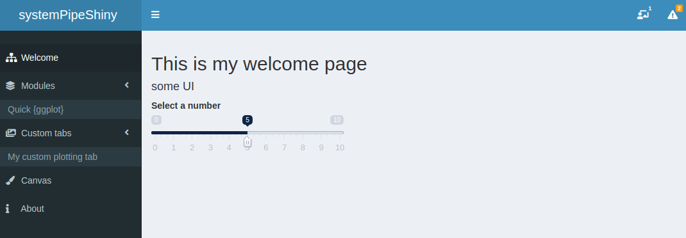

Overwrite tabs
As a framework, default SPS tabs like the welcome tab, the module main tab, the visualization main tab, the Canvas tab and the About tab can be user-defined.

Overwrite SPS default tabs
To start create a SPS project:
suppressPackageStartupMessages(library(systemPipeShiny))
app_path <- "."
spsInit(app_path = app_path, overwrite = TRUE, open_files = FALSE)
## [SPS-DANGER] 2021-04-22 15:45:11 Done, Db created at '/tmp/Rtmp2YLDmY/overwrite/config/sps.db'. DO NOT share this file with others or upload to open access domains.
## [SPS-INFO] 2021-04-22 15:45:11 Key md5 6886f6bf17229ffb646102abad92fa31
## [SPS-INFO] 2021-04-22 15:45:11 SPS project setup done!
use the function spsCoreTabReplace to create a template of which tab you would
like to overwrite. Here we use the “Welcome” tab as example to demo how to write
your own welcome tab.
spsCoreTabReplace(replace_tab = "welcome")
## [SUCCESS] 2021-04-22 15:45:11 File /tmp/Rtmp2YLDmY/overwrite/R/tab_core_welcome.R created
If you are using Rstudio the template will be opened for you like following:
########################## Overwrite the welcome tab ###########################
## UI
core_welcomeUI <- function(id){
ns <- NS(id)
tagList(
# add your UI code below
)
}
## server
core_welcomeServer <- function(id, shared){
module <- function(input, output, session, shared){
ns <- session$ns
# add your server code below
}
moduleServer(id, module)
}
Then you can write your own UI and server for this tab, for example, we can add some UI to the tab:
core_welcomeUI <- function(id){
ns <- NS(id)
tagList(
# add your UI code below
h2("This is my welcome page"),
h4("some UI"),
sliderInput(ns("num"), "Select a number", 0, 10, 5)
)
}
When you restart the app, you should see your custom Welcome tab:

Last modified 2021-04-26: pg_build (884ee0b)